自分専用のシートとスマホのアプリを、自分のGoogleアカウントで作る手順です。所要時間は15〜20分、最初の1回だけです。
・できあがるシートとアプリはあなた専用です。データはあなたのGoogleドライブにだけ入り、講師や他の人からは見えません。
・途中で「このアプリはGoogleで確認されていません」と出ます。自分で作ったアプリなので心配ありません。手順5のとおりに進めてください。
・写真の赤い枠が押す場所です。画面の見た目は、時期やパソコンによって少し違うことがあります。
物販管理シート（配布版 v1.0）用 ／ 発行：Owlice
Googleにログインしていない場合は、先にログインしてください。
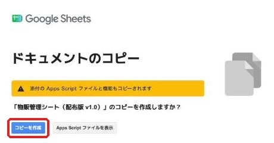
名前は自由に変えて大丈夫です（左上の名前を押すと変えられます）。
「作業」は「ヘルプ」の右にあります。
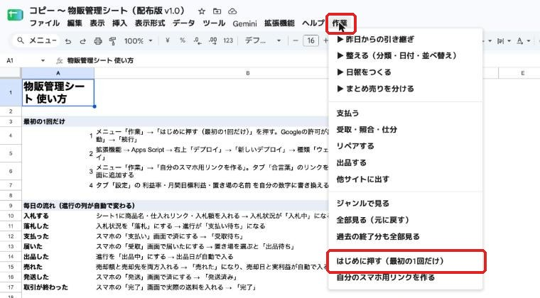
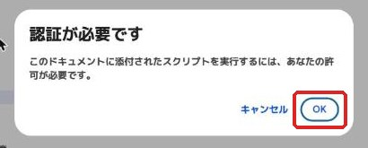
小さな窓が開きます。見当たらないときは、ほかのウインドウの後ろに隠れていないか確かめてください。
→ 自分のアカウントを押す
→「詳細」→「〜に移動」
「物販アプリ がアクセスできる情報を選択してください」と出ます。最初はどの四角にもチェックが入っていません。
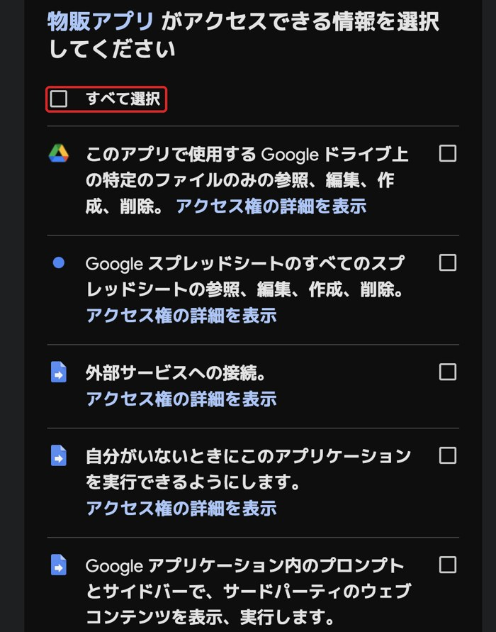
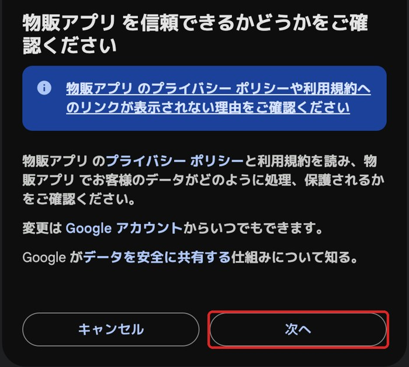
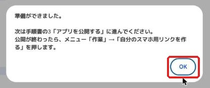
新しいタブで「Apps Script」の画面が開きます。中の文字（プログラム）は触らなくて大丈夫です。
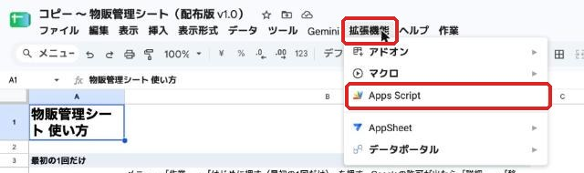
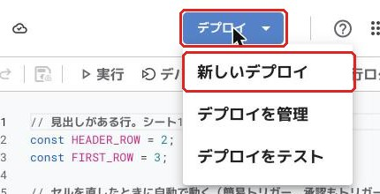
「ウェブアプリ」「次のユーザーとして実行：自分」「アクセスできるユーザー：全員」になっていることだけ見てください。
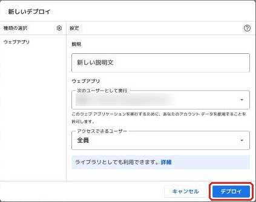
デプロイが終わると、URL（https://script.google.com/macros/s/… で始まり /exec で終わる）が出ます。
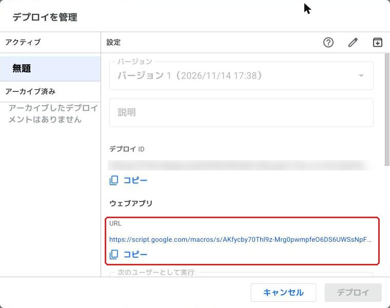
「アプリのアドレスを貼る」と出たら、枠の中を押して貼り付け（⌘＋V、Windowsは Ctrl＋V）→「OK」。
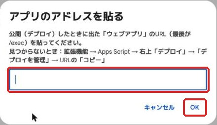
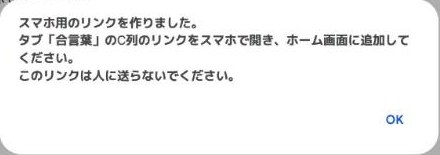
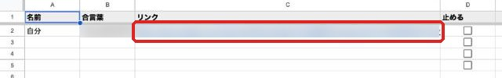
スマホのGoogleスプレッドシートのアプリでこのシートを開き、「合言葉」タブのリンクを押します。下のような画面が出れば成功です。
Safariの共有ボタン（四角に上向きの矢印）→「ホーム画面に追加」で、次からはアイコン1つで開けます。
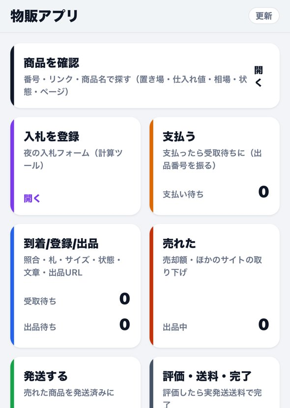
| 月間目標利益（B6） | 今月の目標の利益（円）。例：30000 |
|---|---|
| 棚・箱の名前（M列の3行目から） | 商品を置く場所の名前を1つずつ。例：棚1、箱A。ここに書いた名前が、置き場の選択肢になります。 |
| 利益率（B3） | 最初は20%のままで大丈夫です。入札の上限額はこの数字から計算されます。講師と相談してから変えてください。 |
毎日の使い方は、シートの一番左のタブ「使い方」にまとめてあります。大まかな流れは次のとおりです。
| 入札する | シート1、またはアプリの「入札を登録」で、商品名・仕入れリンク・入札額を入れる |
|---|---|
| 落札した | 入札状況を「落札」にする → 進行が「支払い待ち」になる |
| 支払った・届いた | アプリの「支払う」→「到着/登録/出品」で進める |
| 売れた・発送した | アプリの「売れた」→「発送する」 |
| 取引が終わった | アプリの「評価・送料・完了」で、実際の送料を入れて完了 |
| リンクを開いたら「アクセス権が必要です」「リクエストを送信しました」と出た | いくつものGoogleアカウントでログインしていると、別のアカウントで開いてしまうことがあります。Chromeで ⌘＋Shift＋N（Windowsは Ctrl＋Shift＋N）でシークレットウインドウを開き、自分のアカウントだけでログインしてから、もう一度リンクを開いてください。 |
|---|---|
| メニューに「作業」が出ない | 10秒ほど待ってからページを読み込み直す（⌘＋R ／ F5）。それでも出ないときは、シートを閉じて開き直す。 |
| 「このアプリは Google で確認されていません」と出た | 正常です。「詳細」→「（安全ではないページ）に移動」→「すべて選択」にチェック →「次へ」。自分で作ったアプリなので心配ありません。 |
| 「アドレスの形が違います」と出た | 貼ったものがアプリのURLではありません。「拡張機能」→「Apps Script」→「デプロイ」→「デプロイを管理」で、「ウェブアプリ」のURLの下の「コピー」を押して、もう一度「自分のスマホ用リンクを作る」。 |
| スマホで「ファイルを開くことができません」「ページが見つかりません」と出た | リンクの元になったURLが違っています。上と同じく「デプロイを管理」からURLをコピーし直し、「作業」→「自分のスマホ用リンクを作る」で貼り直す。できたリンクで開き直し、ホーム画面のアイコンも作り直す。 |
| 「新しいデプロイ」をもう一度やった | アプリのURLが変わります。「作業」→「自分のスマホ用リンクを作る」で、新しいURLを貼り直してください。 |
| リンクを人に送ってしまった | タブ「合言葉」のB列の合言葉を消す →「作業」→「自分のスマホ用リンクを作る」。新しいリンクができ、前のリンクはすぐ使えなくなります。スマホのホーム画面のアイコンも新しいリンクで作り直してください。 |
| スマホのアプリで「合言葉が違います」と出た | 古いリンクを開いています。タブ「合言葉」のC列の、いまのリンクを開き直してください。 |
| 許可のチェックを入れ忘れた・「権限が必要です」などのエラーが出た | メニュー「作業」→「はじめに押す」をもう一度押し、許可の画面で「すべて選択」にチェックを入れて「次へ」。 |
| アプリの上に青い帯が出る | Googleのアドレスを直接開いています。タブ「合言葉」のC列のリンクから開き直し、ホーム画面のアイコンもそのリンクで作り直してください。 |
| 計算がおかしい・列がずれた | 色の付いたセルや列の名前を変えていないか確かめる。上の「編集」→「変更履歴」から、元に戻すこともできます。 |
ここにないことで困ったときは、出た画面のスクリーンショットを付けて講師に連絡してください。シートやリンクそのものは送らないでください。
物販管理シート（配布版 v1.0）用 ／ 発行：Owlice